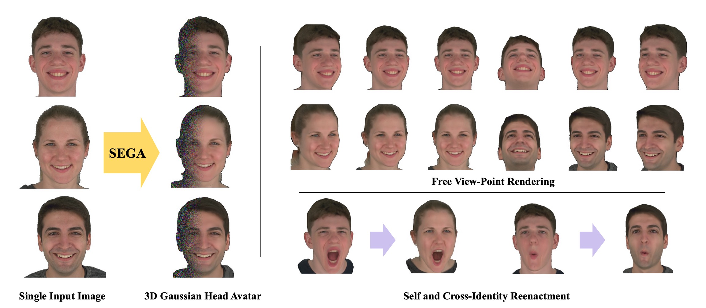

More Research
Decoupled Iterative Refinement Framework for Interacting Hands Reconstruction from a Single RGB Image
Realistic Full-Body Tracking from Sparse Observations via Joint-Level Modeling
HaMuCo: Hand Pose Estimation via Multiview Collaborative Self-Supervised Learning
OHTA: One-shot Hand Avatar via Data-driven Implicit Priors
SEGA: Drivable 3D Gaussian Head Avatar from a Single Image
3DV 2025
Chen Guo
*1,2
,
Zhuo Su
*†2
,
Jian Wang
2
,
Shuang Li
2
,
Xu Chang
2
,
Zhaohu Li
2
,
Yang Zhao
2
,
Guidong Wang
2
,
Ruqi Huang
†1
,
*
Equal contribution
†
Corresponding author
1
Tsinghua International Graduate School
2
ByteDance
Paper
arXiv
Video

We present an approach to creating photo-realistic animatable 3D head avatars from only a few or even one image of the target person.
Video Results
3-shot
Cross-reenactment Results
Self-reenactment Results